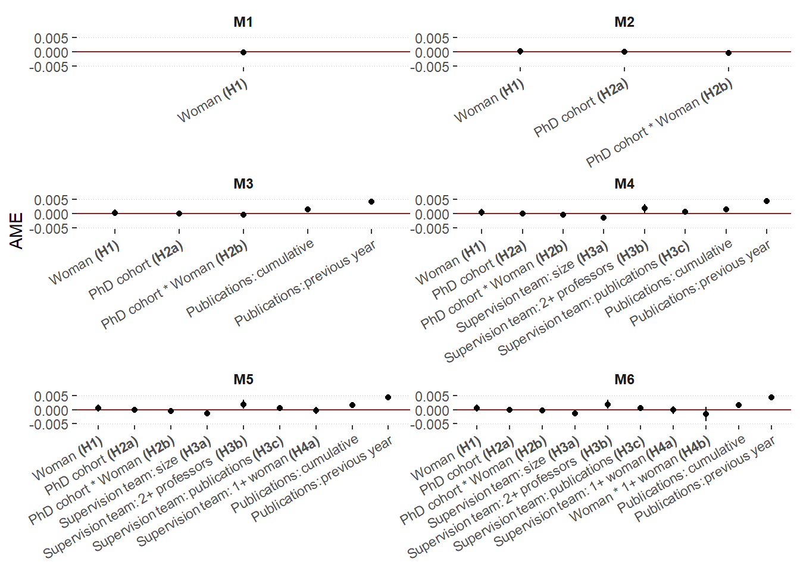
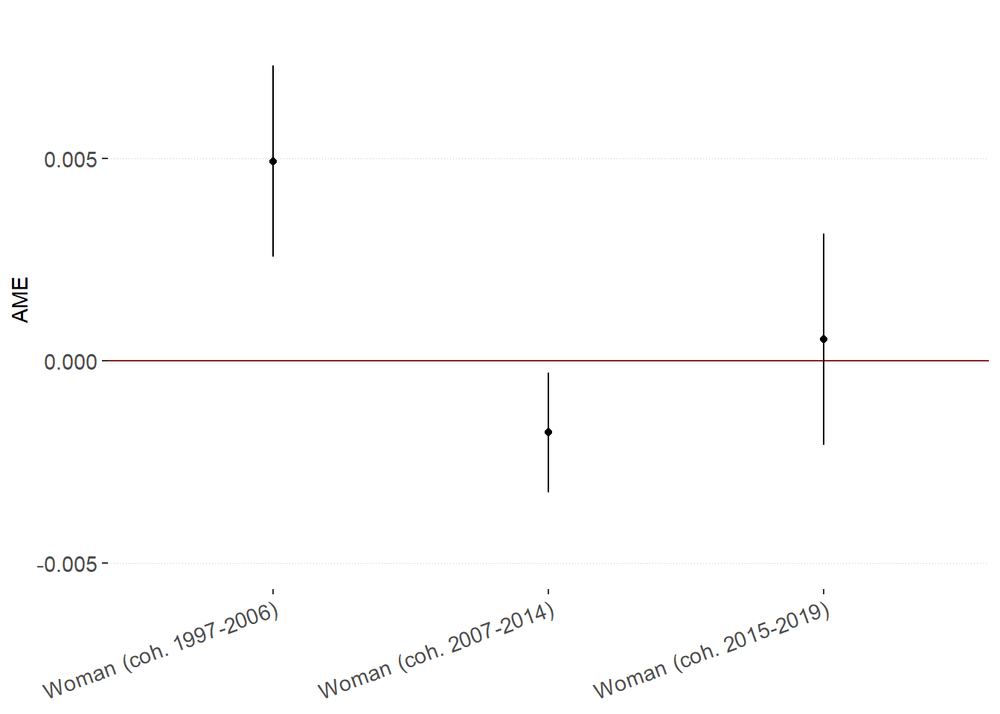

Mentoring for gender equality in early-career grant receipt: figures
Last compiled on 2025-06-13
This lab journal demonstrates how we create the figures featured in the paper.
1 Custom functions
package.check: Check if packages are installed (and install if not) in R (source).
rm(list=ls())
fpackage.check <- function(packages) {
lapply(packages, FUN = function(x) {
if (!require(x, character.only = TRUE)) {
install.packages(x, dependencies = TRUE)
library(x, character.only = TRUE)
}
})
}
fsave <- function(x, file, location="./data/processed/") {
datename <- substr(gsub("[:-]", "", Sys.time()), 1,8)
totalname <- paste(location, datename, file, sep="")
save(x, file = totalname)
}2 Packages
tidyverse: For general data manipulationboot: To create bootstrapped standard errors, following the procedure delineated hereggtext: to edit formatting of text in ggplot figures
packages = c("tidyverse", "boot", "ggtext")
fpackage.check(packages)## Loading required package: ggtext3 Input
We use several results objects:
veni_ppf: Processed dataset containing all independent variables and the dependent variable
- name of dataset:
veni_ppf - used here to show Veni hazard rates per year after obtaining doctorate
- name of dataset:
20250605_ame.rda: results of our main analyses with bootstrapped standard errors
20250610_c1-3.rda: results of our models split out by cohort
load(file="./results/cont_cohort/20250605_ame.rda")
AMEs <- x
load("./data/processed/veni_ppf.rda")
load(file = "./results/robustness/bycohort/20250609_c1.rda")
coh1 <- x
rm(x)
load(file = "./results/robustness/bycohort/20250610_c2.rda")
coh2 <- x
rm(x)
load(file = "./results/robustness/bycohort/20250610_c3.rda")
coh3 <- x
rm(x)3.1 Figure 1: Veni hazard rate by time and gender
menc <- "#D1C166"
womenc <- "#48a363"
veni_ppf %>%
filter(year>2002) %>%
group_by(time, gender_2) %>%
summarise(event = sum(veni),
total = n()) %>%
mutate(hazard = event/total) %>%
ggplot(aes(x=time, y = hazard, group = gender_2, color=gender_2)) +
geom_point() +
labs(x = "Time in years since doctorate receipt", y="Hazard") +
geom_line() +
scale_color_manual(values=c(menc, womenc), name="Gender") +
theme(axis.title=element_text(face="bold"),
legend.title=element_text(face="bold"),
panel.grid.major.x = element_blank(),
panel.background = element_rect(fill="white"),
panel.grid.major.y = element_line(color="#C9c9c9", linewidth=0.2),
panel.grid.minor=element_blank())## `summarise()` has grouped output by 'time'. You can override using the `.groups` argument.
veni_ppf %>%
filter(year>2002) %>%
group_by(time, gender_2) %>%
summarise(event = sum(veni),
total = n()) %>%
mutate(hazard = event/total) -> datacheck## `summarise()` has grouped output by 'time'. You can override using the `.groups` argument.3.2 Figure 2: Model coefficients
Loading in the model output and creating dataframes for each model
original <- AMEs$t0
bias <- colMeans(AMEs$t) - AMEs$t0
se <- apply(AMEs$t, 2, sd)
AMEs.df <- data.frame(original=original, bias=bias, se=se)
row.names(AMEs.df) <- c("AME_gender_m1", "AME_gender_m2", "AME_gender_m3a", "AME_gender_m3b", "AME_gender_m3c", "AME_gender_m4", "AME_cohort_m2", "AME_cohort_m3a", "AME_cohort_m3b", "AME_cohort_m3c", "AME_cohort_m4", "AME_gendercohort_m2", "AME_gendercohort_m3a", "AME_gendercohort_m3b", "AME_gendercohort_m3c", "AME_gendercohort_m4", "AME_time_m1_0", "AME_time_m1_1", "AME_time_m1_2", "AME_time_m1_3", "AME_time_m1_4", "AME_time_m1_5", "AME_time_m1_6", "AME_time_m1_7", "AME_time_m1_8", "AME_time_m2_0", "AME_time_m2_1", "AME_time_m2_2", "AME_time_m2_3", "AME_time_m2_4", "AME_time_m2_5", "AME_time_m2_6", "AME_time_m2_7", "AME_time_m2_8", "AME_time_m3a_0", "AME_time_m3a_1", "AME_time_m3a_2", "AME_time_m3a_3", "AME_time_m3a_4", "AME_time_m3a_5", "AME_time_m3a_6", "AME_time_m3a_7", "AME_time_m3a_8", "AME_time_m3b_0", "AME_time_m3b_1", "AME_time_m3b_2", "AME_time_m3b_3", "AME_time_m3b_4", "AME_time_m3b_5", "AME_time_m3b_6", "AME_time_m3b_7", "AME_time_m3b_8", "AME_time_m3c_0", "AME_time_m3c_1", "AME_time_m3c_2", "AME_time_m3c_3", "AME_time_m3c_4", "AME_time_m3c_5", "AME_time_m3c_6", "AME_time_m3c_7", "AME_time_m3c_8", "AME_time_m4_0", "AME_time_m4_1", "AME_time_m4_2", "AME_time_m4_3", "AME_time_m4_4", "AME_time_m4_5", "AME_time_m4_6", "AME_time_m4_7", "AME_time_m4_8", "AME_cpubs_m3a", "AME_cpubs_m3b", "AME_cpubs_m3c", "AME_cpubs_m4", "AME_ppubs_m3a", "AME_ppubs_m3b", "AME_ppubs_m3c", "AME_ppubs_m4", "AME_netsize_m3b", "AME_netsize_m3c", "AME_netsize_m4", "AME_prof_m3b", "AME_prof_m3c", "AME_prof_m4", "AME_svpubs_m3b", "AME_svpubs_m3c", "AME_svpubs_m4", "AME_womsv_m3c", "AME_womsv_m4", "AME_genderwomsv_m4")
# remove the time rows, too many to include (8 dummies per model)
rows_to_remove <- grep("^AME_time_m(1|2|3a|3b|3c|4)_[0-8]$", rownames(AMEs.df))
AMEs.df <- AMEs.df[-rows_to_remove, ]
AMEs.df$t <- (AMEs.df$original / AMEs.df$se)tot <- "#414141"
menc <- "#D1C166"
womenc <- "#48a363"Extracting relevant coefficients and creating a combined dataframe containing the results of all models
models <- rownames(AMEs.df)
AMEs.df %>%
mutate(ame = original,
model = toupper(str_remove(models, "^.*_"))) %>%
select(ame, model, se) -> ames
row.names(ames) <- models
ames$cov2 <- str_remove(rownames(ames), "_m[:digit:][abc]?")
ames$covariate <- ""
ames$covariate <- ifelse(ames$cov2=="AME_gender", "Woman **(H1)**", ames$covariate)
ames$covariate <- ifelse(ames$cov2=="AME_cohort", "PhD cohort **(H2a)**", ames$covariate)
ames$covariate <- ifelse(ames$cov2=="AME_gendercohort", "PhD cohort * Woman **(H2b)**", ames$covariate)
ames$covariate <- ifelse(ames$cov2=="AME_cpubs", "Publications: cumulative", ames$covariate)
ames$covariate <- ifelse(ames$cov2=="AME_ppubs", "Publications: previous year", ames$covariate)
ames$covariate <- ifelse(ames$cov2=="AME_netsize", "Supervision team: size **(H3a)**", ames$covariate)
ames$covariate <- ifelse(ames$cov2=="AME_prof", "Supervision team: 2+ professors **(H3b)**", ames$covariate)
ames$covariate <- ifelse(ames$cov2=="AME_svpubs", "Supervision team: publications **(H3c)**", ames$covariate)
ames$covariate <- ifelse(ames$cov2=="AME_womsv", "Supervision team: 1+ woman **(H4a)**", ames$covariate)
ames$covariate <- ifelse(ames$cov2=="AME_genderwomsv", "Woman * 1+ woman **(H4b)**", ames$covariate)
ames$covariate <- factor(ames$covariate, levels=c("Woman **(H1)**", "PhD cohort **(H2a)**", "PhD cohort * Woman **(H2b)**", "Supervision team: size **(H3a)**", "Supervision team: 2+ professors **(H3b)**", "Supervision team: publications **(H3c)**", "Supervision team: 1+ woman **(H4a)**", "Woman * 1+ woman **(H4b)**", "Publications: cumulative", "Publications: previous year"))
ames <- ames %>% mutate(model = ifelse(model=="M4", "M6", model),
model = ifelse(model=="M3A", "M3", model),
model = ifelse(model=="M3B", "M4", model),
model = ifelse(model=="M3C", "M5", model))
ames$model <- factor(ames$model, levels=c("M1", "M2", "M3", "M4", "M5", "M6"))
#AMEs$model <- factor(AMEs$model, levels=c("M6", "M5", "M4", "M3", "M2", "M1"))
ames <- ames %>% arrange(covariate, model)ames %>%
mutate(ymin = ame - 1.96*se,
ymax = ame + 1.96*se) -> check_minmax
min(round(check_minmax$ymin, 3))## [1] -0.004max(round(check_minmax$ymax, 3))## [1] 0.005ggplot(ames, aes(y=ame, x=covariate)) +
geom_hline(yintercept=0, color="brown4", linewidth=.5) +
geom_point() +
facet_wrap(model ~ ., nrow=3, ncol=2, scales = "free") +
geom_pointrange(aes(ymin = ame - 1.96*se, ymax = ame + 1.96*se), size=0.1) +
scale_y_continuous(limits = c(-0.005, 0.005), breaks=seq(-0.005, 0.005, by = 0.005)) +
labs(y="AME") +
theme(axis.title.x = element_blank(),
axis.text.x = element_markdown(angle=30, hjust=1, vjust=1),
legend.position = "none",
strip.text.x = element_markdown(angle=0, size=9, face="bold"),
strip.background = element_blank(),
panel.background = element_rect(fill="white"),
panel.spacing = unit(0.1, 'points'),
panel.grid.major.y = element_line(color="#C9c9c9", linewidth=0.2, linetype=3),
panel.grid.minor=element_blank(),
panel.grid.major.x=element_blank())## Warning: Removed 1 row containing missing values or values outside the scale range (`geom_segment()`).
## Removed 1 row containing missing values or values outside the scale range (`geom_segment()`).
## Removed 1 row containing missing values or values outside the scale range (`geom_segment()`).
## Removed 1 row containing missing values or values outside the scale range (`geom_segment()`).
3.3 Figure 3: Cohort splits
original <- coh1$t0
bias <- colMeans(coh1$t) - coh1$t0
se <- apply(coh1$t, 2, sd)
df.coh1 <- data.frame(original=original, bias=bias, se=se)
row.names(df.coh1) <- c(c('AME_gender_m1', 'AME_gender_m2', 'AME_gender_m3a', 'AME_gender_m3b', 'AME_gender_m3c', 'AME_gender_m4', "AME_time_m1_0", "AME_time_m1_1", "AME_time_m1_2", "AME_time_m1_3", "AME_time_m1_4", "AME_time_m1_5", "AME_time_m1_6", "AME_time_m1_7", "AME_time_m1_8", "AME_time_m2_0", "AME_time_m2_1", "AME_time_m2_2", "AME_time_m2_3", "AME_time_m2_4", "AME_time_m2_5", "AME_time_m2_6", "AME_time_m2_7", "AME_time_m2_8", "AME_time_m3a_0", "AME_time_m3a_1", "AME_time_m3a_2", "AME_time_m3a_3", "AME_time_m3a_4", "AME_time_m3a_5", "AME_time_m3a_6", "AME_time_m3a_7", "AME_time_m3a_8", "AME_time_m3b_0", "AME_time_m3b_1", "AME_time_m3b_2", "AME_time_m3b_3", "AME_time_m3b_4", "AME_time_m3b_5", "AME_time_m3b_6", "AME_time_m3b_7", "AME_time_m3b_8", "AME_time_m3c_0", "AME_time_m3c_1", "AME_time_m3c_2", "AME_time_m3c_3", "AME_time_m3c_4", "AME_time_m3c_5", "AME_time_m3c_6", "AME_time_m3c_7", "AME_time_m3c_8", "AME_time_m4_0", "AME_time_m4_1", "AME_time_m4_2", "AME_time_m4_3", "AME_time_m4_4", "AME_time_m4_5", "AME_time_m4_6", "AME_time_m4_7", "AME_time_m4_8", 'AME_cpubs_m3a', 'AME_cpubs_m3b', 'AME_cpubs_m3c', 'AME_cpubs_m4', 'AME_ppubs_m3a', 'AME_ppubs_m3b', 'AME_ppubs_m3c', 'AME_ppubs_m4', 'AME_netsize_m3b', 'AME_netsize_m3c', 'AME_netsize_m4', 'AME_prof_m3b', 'AME_prof_m3c', 'AME_prof_m4', 'AME_svpubs_m3b', 'AME_svpubs_m3c', 'AME_svpubs_m4', 'AME_womsv_m3c', 'AME_womsv_m4', 'AME_genderwomsv_m4'))
df.coh1$t <- (df.coh1$original / df.coh1$se)
round(df.coh1, 5)## original bias se t
## AME_gender_m1 0.00473 -0.00001 0.00115 4.13064
## AME_gender_m2 0.00473 -0.00001 0.00115 4.13064
## AME_gender_m3a 0.00493 0.00002 0.00121 4.07444
## AME_gender_m3b 0.00490 0.00002 0.00125 3.91462
## AME_gender_m3c 0.00483 0.00002 0.00126 3.83763
## AME_gender_m4 0.00493 0.00003 0.00128 3.86088
## AME_time_m1_0 0.00000 0.00000 0.00000 NaN
## AME_time_m1_1 0.01319 -0.00014 0.00209 6.30037
## AME_time_m1_2 0.01813 0.00019 0.00270 6.70752
## AME_time_m1_3 0.01855 -0.00007 0.00245 7.56616
## AME_time_m1_4 0.00556 -0.00008 0.00168 3.30678
## AME_time_m1_5 0.00000 0.00001 0.00093 0.00363
## AME_time_m1_6 0.00001 0.00005 0.00092 0.00577
## AME_time_m1_7 -0.00132 0.00001 0.00065 -2.01427
## AME_time_m1_8 -0.00132 0.00001 0.00065 -2.01427
## AME_time_m2_0 0.00000 0.00000 0.00000 NaN
## AME_time_m2_1 0.01319 -0.00014 0.00209 6.30037
## AME_time_m2_2 0.01813 0.00019 0.00270 6.70752
## AME_time_m2_3 0.01855 -0.00007 0.00245 7.56616
## AME_time_m2_4 0.00556 -0.00008 0.00168 3.30678
## AME_time_m2_5 0.00000 0.00001 0.00093 0.00363
## AME_time_m2_6 0.00001 0.00005 0.00092 0.00577
## AME_time_m2_7 -0.00132 0.00001 0.00065 -2.01427
## AME_time_m2_8 -0.00132 0.00001 0.00065 -2.01427
## AME_time_m3a_0 0.00000 0.00000 0.00000 NaN
## AME_time_m3a_1 0.01296 -0.00013 0.00224 5.79633
## AME_time_m3a_2 0.01735 0.00023 0.00273 6.34743
## AME_time_m3a_3 0.01830 -0.00002 0.00244 7.49166
## AME_time_m3a_4 0.00564 -0.00008 0.00179 3.15612
## AME_time_m3a_5 -0.00009 0.00000 0.00102 -0.08787
## AME_time_m3a_6 -0.00011 0.00004 0.00099 -0.11254
## AME_time_m3a_7 -0.00144 0.00000 0.00073 -1.97135
## AME_time_m3a_8 -0.00144 0.00000 0.00073 -1.97135
## AME_time_m3b_0 0.00000 0.00000 0.00000 NaN
## AME_time_m3b_1 0.01287 -0.00014 0.00221 5.81455
## AME_time_m3b_2 0.01733 0.00023 0.00272 6.37509
## AME_time_m3b_3 0.01831 -0.00001 0.00244 7.49299
## AME_time_m3b_4 0.00567 -0.00008 0.00179 3.16695
## AME_time_m3b_5 -0.00007 0.00000 0.00101 -0.06740
## AME_time_m3b_6 -0.00009 0.00004 0.00099 -0.09289
## AME_time_m3b_7 -0.00142 0.00000 0.00072 -1.96482
## AME_time_m3b_8 -0.00142 0.00000 0.00072 -1.96482
## AME_time_m3c_0 0.00000 0.00000 0.00000 NaN
## AME_time_m3c_1 0.01287 -0.00015 0.00221 5.81751
## AME_time_m3c_2 0.01734 0.00023 0.00272 6.38409
## AME_time_m3c_3 0.01833 -0.00002 0.00244 7.50342
## AME_time_m3c_4 0.00568 -0.00008 0.00179 3.16725
## AME_time_m3c_5 -0.00007 0.00000 0.00101 -0.06609
## AME_time_m3c_6 -0.00009 0.00004 0.00099 -0.09246
## AME_time_m3c_7 -0.00142 0.00000 0.00072 -1.96573
## AME_time_m3c_8 -0.00142 0.00000 0.00072 -1.96573
## AME_time_m4_0 0.00000 0.00000 0.00000 NaN
## AME_time_m4_1 0.01291 -0.00014 0.00222 5.81784
## AME_time_m4_2 0.01735 0.00023 0.00273 6.36579
## AME_time_m4_3 0.01836 -0.00002 0.00244 7.51299
## AME_time_m4_4 0.00566 -0.00008 0.00179 3.16170
## AME_time_m4_5 -0.00008 0.00000 0.00102 -0.07410
## AME_time_m4_6 -0.00010 0.00004 0.00099 -0.10177
## AME_time_m4_7 -0.00143 0.00000 0.00073 -1.96248
## AME_time_m4_8 -0.00143 0.00000 0.00073 -1.96248
## AME_cpubs_m3a 0.00092 -0.00002 0.00089 1.03671
## AME_cpubs_m3b 0.00089 -0.00002 0.00090 0.98291
## AME_cpubs_m3c 0.00088 -0.00002 0.00090 0.97739
## AME_cpubs_m4 0.00094 -0.00002 0.00091 1.02870
## AME_ppubs_m3a 0.00323 -0.00004 0.00106 3.05849
## AME_ppubs_m3b 0.00327 -0.00004 0.00107 3.05270
## AME_ppubs_m3c 0.00327 -0.00004 0.00107 3.05430
## AME_ppubs_m4 0.00324 -0.00004 0.00107 3.03307
## AME_netsize_m3b -0.00066 0.00002 0.00068 -0.98120
## AME_netsize_m3c -0.00075 0.00002 0.00070 -1.07422
## AME_netsize_m4 -0.00076 0.00002 0.00070 -1.08270
## AME_prof_m3b 0.00418 -0.00005 0.00252 1.66013
## AME_prof_m3c 0.00418 -0.00006 0.00251 1.66403
## AME_prof_m4 0.00405 -0.00007 0.00247 1.63934
## AME_svpubs_m3b 0.00075 0.00002 0.00054 1.38393
## AME_svpubs_m3c 0.00076 0.00002 0.00055 1.39197
## AME_svpubs_m4 0.00077 0.00002 0.00055 1.41327
## AME_womsv_m3c 0.00111 0.00001 0.00165 0.67451
## AME_womsv_m4 0.00163 0.00004 0.00182 0.89248
## AME_genderwomsv_m4 -0.00325 -0.00017 0.00333 -0.97318df.coh1 <- df.coh1[3,] # select only gender M3
df.coh1 %>%
mutate(ame = original,
cohort = "Cohort 1") %>%
select(ame, se, cohort) -> ames1
original <- coh2$t0
bias <- colMeans(coh2$t) - coh2$t0
se <- apply(coh2$t, 2, sd)
df.coh2 <- data.frame(original=original, bias=bias, se=se)
row.names(df.coh2) <- c("AME_gender_m1", "AME_gender_m2", "AME_gender_m3a", "AME_gender_m3b", "AME_gender_m3c", "AME_gender_m4", "AME_time_m1_0", "AME_time_m1_1", "AME_time_m1_2", "AME_time_m1_3", "AME_time_m1_4", "AME_time_m1_5", "AME_time_m1_6", "AME_time_m1_7", "AME_time_m1_8", "AME_time_m2_0", "AME_time_m2_1", "AME_time_m2_2", "AME_time_m2_3", "AME_time_m2_4", "AME_time_m2_5", "AME_time_m2_6", "AME_time_m2_7", "AME_time_m2_8", "AME_time_m3a_0", "AME_time_m3a_1", "AME_time_m3a_2", "AME_time_m3a_3", "AME_time_m3a_4", "AME_time_m3a_5", "AME_time_m3a_6", "AME_time_m3a_7", "AME_time_m3a_8", "AME_time_m3b_0", "AME_time_m3b_1", "AME_time_m3b_2", "AME_time_m3b_3", "AME_time_m3b_4", "AME_time_m3b_5", "AME_time_m3b_6", "AME_time_m3b_7", "AME_time_m3b_8", "AME_time_m3c_0", "AME_time_m3c_1", "AME_time_m3c_2", "AME_time_m3c_3", "AME_time_m3c_4", "AME_time_m3c_5", "AME_time_m3c_6", "AME_time_m3c_7", "AME_time_m3c_8", "AME_time_m4_0", "AME_time_m4_1", "AME_time_m4_2", "AME_time_m4_3", "AME_time_m4_4", "AME_time_m4_5", "AME_time_m4_6", "AME_time_m4_7", "AME_time_m4_8", "AME_2015_m2", "AME_2015_m3a", "AME_2015_m3b", "AME_2015_m3c", "AME_2015_m4", "AME_gender2015_m2", "AME_gender2015_m3a", "AME_gender2015_m3b", "AME_gender2015_m3c", "AME_gender2015_m4", "AME_cpubs_m3a", "AME_cpubs_m3b", "AME_cpubs_m3c", "AME_cpubs_m4", "AME_ppubs_m3a", "AME_ppubs_m3b", "AME_ppubs_m3c", "AME_ppubs_m4", "AME_netsize_m3b", "AME_netsize_m3c", "AME_netsize_m4", "AME_prof_m3b", "AME_prof_m3c", "AME_prof_m4", "AME_svpubs_m3b", "AME_svpubs_m3c", "AME_svpubs_m4", "AME_womsv_m3c", "AME_womsv_m4", "AME_genderwomsv_m4")
df.coh2$t <- (df.coh2$original / df.coh2$se)
round(df.coh2, 5) ## original bias se t
## AME_gender_m1 -0.00203 0.00000 0.00075 -2.69918
## AME_gender_m2 -0.00189 0.00000 0.00075 -2.53384
## AME_gender_m3a -0.00177 0.00000 0.00076 -2.34860
## AME_gender_m3b -0.00163 0.00000 0.00077 -2.12666
## AME_gender_m3c -0.00159 0.00001 0.00079 -2.02482
## AME_gender_m4 -0.00159 0.00001 0.00079 -2.02764
## AME_time_m1_0 0.00000 0.00000 0.00000 NaN
## AME_time_m1_1 0.00801 0.00000 0.00136 5.86883
## AME_time_m1_2 0.01450 0.00008 0.00177 8.18128
## AME_time_m1_3 0.02461 0.00000 0.00211 11.68882
## AME_time_m1_4 0.00096 0.00004 0.00098 0.97819
## AME_time_m1_5 -0.00001 0.00005 0.00089 -0.00654
## AME_time_m1_6 -0.00180 0.00002 0.00067 -2.67319
## AME_time_m1_7 -0.00189 0.00001 0.00067 -2.84117
## AME_time_m1_8 -0.00246 0.00002 0.00060 -4.06291
## AME_time_m2_0 0.00000 0.00000 0.00000 NaN
## AME_time_m2_1 0.00708 0.00001 0.00122 5.80926
## AME_time_m2_2 0.01351 0.00008 0.00164 8.25445
## AME_time_m2_3 0.02413 -0.00001 0.00203 11.90227
## AME_time_m2_4 0.00141 0.00004 0.00093 1.51160
## AME_time_m2_5 0.00056 0.00004 0.00088 0.63711
## AME_time_m2_6 -0.00132 0.00001 0.00062 -2.14762
## AME_time_m2_7 -0.00139 0.00000 0.00062 -2.24084
## AME_time_m2_8 -0.00206 0.00001 0.00051 -4.01617
## AME_time_m3a_0 0.00000 0.00000 0.00000 NaN
## AME_time_m3a_1 0.00675 0.00004 0.00131 5.16745
## AME_time_m3a_2 0.01244 0.00011 0.00165 7.54016
## AME_time_m3a_3 0.02332 0.00000 0.00201 11.61920
## AME_time_m3a_4 0.00093 0.00002 0.00101 0.91649
## AME_time_m3a_5 0.00010 0.00003 0.00098 0.10628
## AME_time_m3a_6 -0.00177 0.00000 0.00072 -2.44820
## AME_time_m3a_7 -0.00187 -0.00001 0.00073 -2.54426
## AME_time_m3a_8 -0.00249 0.00000 0.00065 -3.84578
## AME_time_m3b_0 0.00000 0.00000 0.00000 NaN
## AME_time_m3b_1 0.00675 0.00005 0.00131 5.14978
## AME_time_m3b_2 0.01244 0.00011 0.00165 7.54747
## AME_time_m3b_3 0.02334 0.00001 0.00201 11.61252
## AME_time_m3b_4 0.00093 0.00002 0.00101 0.91918
## AME_time_m3b_5 0.00010 0.00003 0.00098 0.10631
## AME_time_m3b_6 -0.00178 0.00000 0.00072 -2.45834
## AME_time_m3b_7 -0.00188 -0.00001 0.00073 -2.55712
## AME_time_m3b_8 -0.00249 0.00000 0.00065 -3.85489
## AME_time_m3c_0 0.00000 0.00000 0.00000 NaN
## AME_time_m3c_1 0.00676 0.00005 0.00131 5.14318
## AME_time_m3c_2 0.01245 0.00012 0.00165 7.53632
## AME_time_m3c_3 0.02334 0.00001 0.00201 11.61874
## AME_time_m3c_4 0.00093 0.00002 0.00101 0.91447
## AME_time_m3c_5 0.00010 0.00003 0.00098 0.10220
## AME_time_m3c_6 -0.00178 0.00000 0.00072 -2.46317
## AME_time_m3c_7 -0.00188 -0.00001 0.00073 -2.56131
## AME_time_m3c_8 -0.00250 0.00000 0.00065 -3.85454
## AME_time_m4_0 0.00000 0.00000 0.00000 NaN
## AME_time_m4_1 0.00677 0.00005 0.00132 5.14343
## AME_time_m4_2 0.01246 0.00012 0.00165 7.53605
## AME_time_m4_3 0.02334 0.00001 0.00201 11.61232
## AME_time_m4_4 0.00092 0.00002 0.00101 0.91206
## AME_time_m4_5 0.00010 0.00003 0.00098 0.09872
## AME_time_m4_6 -0.00179 0.00000 0.00072 -2.46919
## AME_time_m4_7 -0.00188 -0.00001 0.00073 -2.56505
## AME_time_m4_8 -0.00250 0.00000 0.00065 -3.85608
## AME_2015_m2 -0.00276 0.00002 0.00075 -3.70802
## AME_2015_m3a -0.00272 0.00003 0.00078 -3.46982
## AME_2015_m3b -0.00260 0.00004 0.00079 -3.28702
## AME_2015_m3c -0.00258 0.00004 0.00079 -3.25024
## AME_2015_m4 -0.00257 0.00004 0.00079 -3.24262
## AME_gender2015_m2 0.00374 0.00008 0.00143 2.62603
## AME_gender2015_m3a 0.00349 0.00007 0.00142 2.46118
## AME_gender2015_m3b 0.00349 0.00007 0.00142 2.45293
## AME_gender2015_m3c 0.00349 0.00007 0.00142 2.45375
## AME_gender2015_m4 0.00355 0.00007 0.00143 2.48096
## AME_cpubs_m3a 0.00223 0.00000 0.00066 3.35841
## AME_cpubs_m3b 0.00219 0.00000 0.00067 3.28398
## AME_cpubs_m3c 0.00219 0.00000 0.00067 3.29220
## AME_cpubs_m4 0.00220 0.00000 0.00067 3.29591
## AME_ppubs_m3a 0.00414 0.00000 0.00072 5.73414
## AME_ppubs_m3b 0.00418 0.00000 0.00074 5.66562
## AME_ppubs_m3c 0.00419 0.00000 0.00074 5.67607
## AME_ppubs_m4 0.00418 0.00000 0.00074 5.64934
## AME_netsize_m3b -0.00174 0.00000 0.00053 -3.26374
## AME_netsize_m3c -0.00170 0.00001 0.00055 -3.12082
## AME_netsize_m4 -0.00171 0.00001 0.00055 -3.12850
## AME_prof_m3b 0.00176 -0.00004 0.00089 1.97706
## AME_prof_m3c 0.00176 -0.00004 0.00089 1.96770
## AME_prof_m4 0.00176 -0.00004 0.00089 1.97479
## AME_svpubs_m3b 0.00046 -0.00001 0.00040 1.15180
## AME_svpubs_m3c 0.00045 -0.00001 0.00040 1.12810
## AME_svpubs_m4 0.00045 -0.00001 0.00040 1.13023
## AME_womsv_m3c -0.00029 -0.00005 0.00094 -0.31420
## AME_womsv_m4 -0.00025 -0.00005 0.00096 -0.25807
## AME_genderwomsv_m4 -0.00053 0.00000 0.00165 -0.32089df.coh2 <- df.coh2[3,]
df.coh2 %>%
mutate(ame = original,
cohort = "Cohort 2") %>%
select(ame, se, cohort) -> ames2
original <- coh3$t0
bias <- colMeans(coh3$t) - coh3$t0
se <- apply(coh3$t, 2, sd)
df.coh3 <- data.frame(original=original, bias=bias, se=se)
row.names(df.coh3) <- c("AME_gender_m1", "AME_gender_m2", "AME_gender_m3a", "AME_gender_m3b", "AME_gender_m3c", "AME_gender_m4", "AME_time_m1_0", "AME_time_m1_1", "AME_time_m1_2", "AME_time_m1_3", "AME_time_m1_4", "AME_time_m1_5", "AME_time_m2_0", "AME_time_m2_1", "AME_time_m2_2", "AME_time_m2_3", "AME_time_m2_4", "AME_time_m2_5", "AME_time_m3a_0", "AME_time_m3a_1", "AME_time_m3a_2", "AME_time_m3a_3", "AME_time_m3a_4", "AME_time_m3a_5", "AME_time_m3b_0", "AME_time_m3b_1", "AME_time_m3b_2", "AME_time_m3b_3", "AME_time_m3b_4", "AME_time_m3b_5", "AME_time_m3c_0", "AME_time_m3c_1", "AME_time_m3c_2", "AME_time_m3c_3", "AME_time_m3c_4", "AME_time_m3c_5", "AME_time_m4_0", "AME_time_m4_1", "AME_time_m4_2", "AME_time_m4_3", "AME_time_m4_4", "AME_time_m4_5","AME_cpubs_m3a", "AME_cpubs_m3b", "AME_cpubs_m3c", "AME_cpubs_m4", "AME_ppubs_m3a", "AME_ppubs_m3b", "AME_ppubs_m3c", "AME_ppubs_m4", "AME_netsize_m3b", "AME_netsize_m3c", "AME_netsize_m4", "AME_prof_m3b", "AME_prof_m3c", "AME_prof_m4", "AME_svpubs_m3b", "AME_svpubs_m3c", "AME_svpubs_m4", "AME_womsv_m3c", "AME_womsv_m4", "AME_genderwomsv_m4")
df.coh3$t <- (df.coh3$original / df.coh3$se)
round(df.coh3, 5)## original bias se t
## AME_gender_m1 -0.00097 0.00001 0.00124 -0.77864
## AME_gender_m2 -0.00097 0.00001 0.00124 -0.77864
## AME_gender_m3a 0.00052 0.00000 0.00133 0.39317
## AME_gender_m3b 0.00064 -0.00001 0.00133 0.48397
## AME_gender_m3c 0.00075 -0.00002 0.00136 0.55366
## AME_gender_m4 0.00077 -0.00002 0.00136 0.56599
## AME_time_m1_0 0.00000 0.00000 0.00000 NaN
## AME_time_m1_1 0.00311 -0.00006 0.00091 3.43671
## AME_time_m1_2 0.01287 -0.00007 0.00203 6.34571
## AME_time_m1_3 0.01837 0.00017 0.00289 6.34834
## AME_time_m1_4 0.00433 -0.00019 0.00166 2.61452
## AME_time_m1_5 -0.00024 0.00000 0.00023 -1.02509
## AME_time_m2_0 0.00000 0.00000 0.00000 NaN
## AME_time_m2_1 0.00311 -0.00006 0.00091 3.43671
## AME_time_m2_2 0.01287 -0.00007 0.00203 6.34571
## AME_time_m2_3 0.01837 0.00017 0.00289 6.34834
## AME_time_m2_4 0.00433 -0.00019 0.00166 2.61452
## AME_time_m2_5 -0.00024 0.00000 0.00023 -1.02509
## AME_time_m3a_0 0.00000 0.00000 0.00000 NaN
## AME_time_m3a_1 0.00263 -0.00004 0.00081 3.24037
## AME_time_m3a_2 0.01140 -0.00006 0.00183 6.24117
## AME_time_m3a_3 0.01982 0.00017 0.00329 6.01933
## AME_time_m3a_4 0.00572 -0.00021 0.00225 2.54606
## AME_time_m3a_5 -0.00025 0.00000 0.00025 -1.02723
## AME_time_m3b_0 0.00000 0.00000 0.00000 NaN
## AME_time_m3b_1 0.00263 -0.00004 0.00081 3.23381
## AME_time_m3b_2 0.01135 -0.00004 0.00183 6.18947
## AME_time_m3b_3 0.01978 0.00017 0.00328 6.03467
## AME_time_m3b_4 0.00571 -0.00021 0.00223 2.55898
## AME_time_m3b_5 -0.00026 0.00000 0.00025 -1.02874
## AME_time_m3c_0 0.00000 0.00000 0.00000 NaN
## AME_time_m3c_1 0.00263 -0.00004 0.00081 3.23738
## AME_time_m3c_2 0.01136 -0.00004 0.00184 6.18415
## AME_time_m3c_3 0.01982 0.00017 0.00329 6.02138
## AME_time_m3c_4 0.00573 -0.00021 0.00224 2.56089
## AME_time_m3c_5 -0.00026 0.00000 0.00025 -1.02611
## AME_time_m4_0 0.00000 0.00000 0.00000 NaN
## AME_time_m4_1 0.00264 -0.00004 0.00082 3.23477
## AME_time_m4_2 0.01137 -0.00004 0.00184 6.17591
## AME_time_m4_3 0.01976 0.00019 0.00329 5.99746
## AME_time_m4_4 0.00569 -0.00021 0.00222 2.55831
## AME_time_m4_5 -0.00026 0.00000 0.00025 -1.02589
## AME_cpubs_m3a 0.00303 0.00003 0.00129 2.34169
## AME_cpubs_m3b 0.00308 0.00003 0.00128 2.40265
## AME_cpubs_m3c 0.00305 0.00003 0.00128 2.39388
## AME_cpubs_m4 0.00309 0.00003 0.00128 2.41572
## AME_ppubs_m3a 0.00634 0.00006 0.00142 4.46275
## AME_ppubs_m3b 0.00630 0.00008 0.00142 4.44877
## AME_ppubs_m3c 0.00630 0.00008 0.00142 4.44744
## AME_ppubs_m4 0.00627 0.00009 0.00142 4.42251
## AME_netsize_m3b -0.00142 0.00014 0.00106 -1.34189
## AME_netsize_m3c -0.00132 0.00012 0.00107 -1.23570
## AME_netsize_m4 -0.00132 0.00013 0.00107 -1.23528
## AME_prof_m3b 0.00025 -0.00005 0.00155 0.16414
## AME_prof_m3c 0.00029 -0.00006 0.00155 0.18374
## AME_prof_m4 0.00030 -0.00006 0.00155 0.19495
## AME_svpubs_m3b -0.00059 0.00011 0.00080 -0.73917
## AME_svpubs_m3c -0.00062 0.00011 0.00080 -0.78548
## AME_svpubs_m4 -0.00062 0.00011 0.00080 -0.78190
## AME_womsv_m3c -0.00071 0.00010 0.00146 -0.48639
## AME_womsv_m4 -0.00063 0.00009 0.00147 -0.42451
## AME_genderwomsv_m4 -0.00230 0.00024 0.00296 -0.77827df.coh3 <- df.coh3[3,]
df.coh3 %>%
mutate(ame = original,
cohort = "Cohort 3") %>%
select(ame, se, cohort) -> ames3
AMEs <- do.call("rbind", list(ames1, ames2, ames3))
AMEs$covariate <- c("Woman (coh. 1997-2006)", "Woman (coh. 2007-2014)", "Woman (coh. 2015-2019)")AMEs %>%
mutate(ymin = ame - 1.96*se,
ymax = ame + 1.96*se) -> check_minmax2
min(round(check_minmax2$ymin, 3))## [1] -0.003max(round(check_minmax2$ymax, 3))## [1] 0.007ggplot(AMEs, aes(y=ame, x=covariate)) +
geom_hline(yintercept=0, color="brown4", linewidth=.5) +
geom_point() +
geom_pointrange(aes(ymin = ame - 1.96*se, ymax = ame + 1.96*se), size=0.1) +
scale_y_continuous(limits = c(-0.005, 0.008), breaks=seq(-0.005, 0.010, by = 0.005)) +
labs(y="AME") +
theme(axis.title.x = element_blank(),
axis.text.x = element_markdown(angle=20, hjust=1, vjust=1, size=11),
axis.text.y = element_text(size=11),
legend.position = "none",
strip.text.x = element_markdown(angle=0, size=9, face="bold"),
strip.background = element_blank(),
panel.background = element_rect(fill="white"),
panel.spacing = unit(0.1, 'points'),
panel.grid.major.y = element_line(color="#C9c9c9", linewidth=0.2, linetype=3),
panel.grid.minor=element_blank(),
panel.grid.major.x=element_blank())

Copyright © 2025